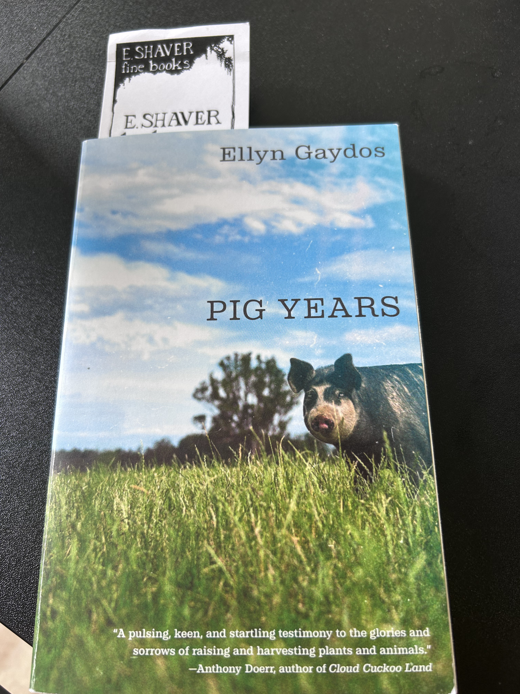

Pig Years
I picked up Pig Years during a summer break walk through Savannah, Georgia, at E. Shaver Booksellers, a charming independent bookstore tucked into the city’s historic streets. Beyond its wonderful shelves, the bookstore also has adorable cats, which made the visit feel especially memorable.
Pig Years offers an intimate perspective on farming life through the experiences of Ellyn Gaydos. Rather than focusing solely on agricultural production, the book explores the relationships, uncertainties, and everyday realities that shape farming communities.
As someone researching sustainable agriculture and food systems, I appreciate how this book reminds us that behind every dataset are real people making complex decisions. While my work often focuses on nutrient cycles, environmental impacts, and systems-level analyses, Pig Years reinforces the importance of understanding agriculture through the lived experiences of farmers.
It is a gentle but powerful reminder that meaningful, science-based solutions should not only be environmentally and economically sound, but also practical, humane, and grounded in the realities of the people who steward our agricultural landscapes.